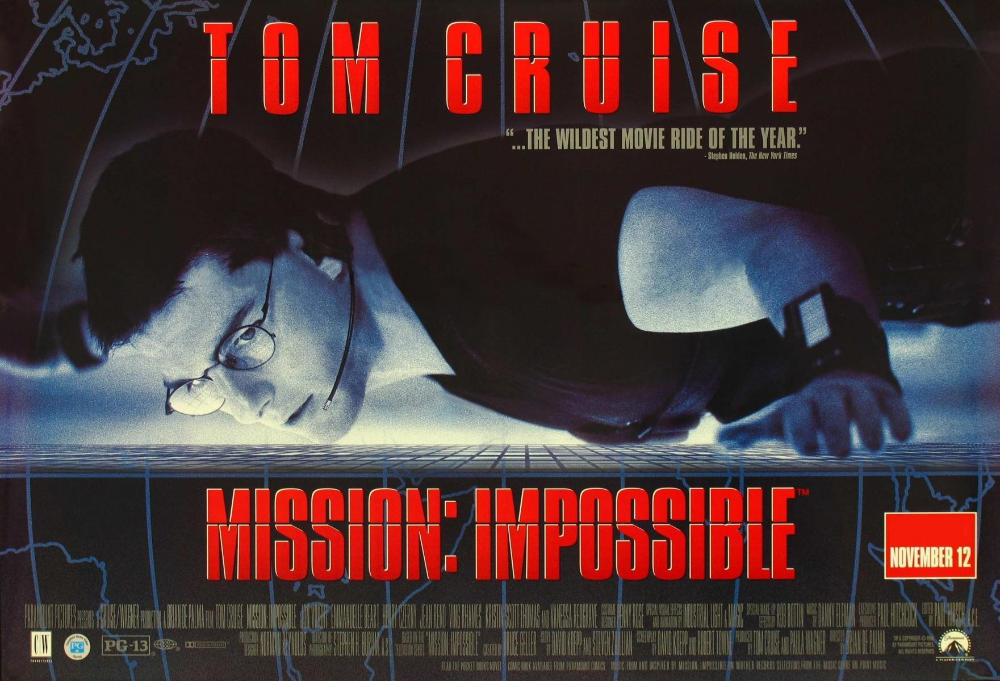
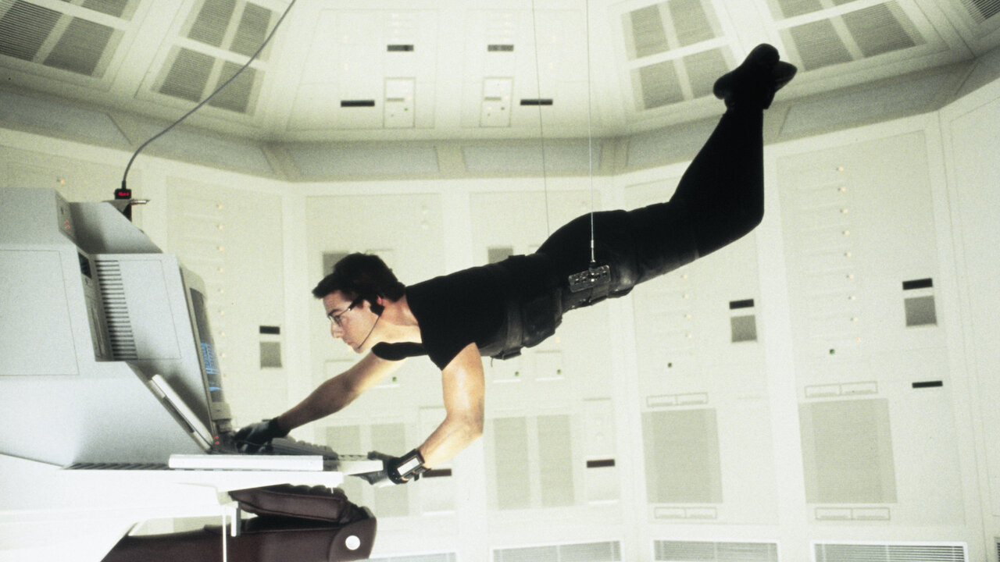

Misión imposible
Sipnosis
Los miembros de un comando de la CIA son enviados a Praga con la misión de capturar,
durante una recepción en la embajada americana, a un espía enemigo que se dispone a
robar un disco que contiene una lista secreta de agentes de Europa central.
Lo único que ignoran es que la CIA, convencida de que en el comando hay un topo
infiltrado, ha enviado un segundo equipo con la misión de corroborar que todo ocurre según
lo previsto y detener cuanto antes al detective que está tratando de hundir su organización.
Se trata de la primera entrega de la famosa pentalogía basada en la serie homónima de televisión
de los años sesenta y setenta, con Tom Cruise ('Oblivion', 'Al filo del mañana') en el papel del superespía
Ethan Hunt, Kristin Scott Thomas como la agente Sarah Davies, Jon Voight, que interpreta a Jim Phelps
y con Jean Reno, que da vida a Franz Krieger. Brian de Palma ('La dalia negra', 'Passion') es el encargado de
dirigir este largometraje que se convirtió en referencia del cine de espías en los años noventa.
Tráiler
 
Si quieres comprarla o alquilarla pincha aquí